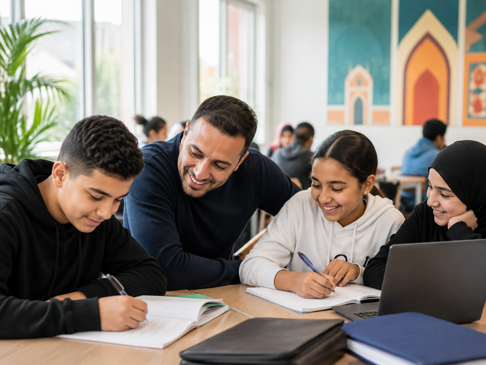

Advies voor burgers en families
MOSA biedt laagdrempelige uitleg en denkt mee met burgers en families die zoeken naar overzicht, richting of een passende volgende stap.
Diensten
MOSA helpt bij maatschappelijke vragen, organiseert informatie en brengt burgers en organisaties bij elkaar rond gedeelde doelen.
Ondersteuning
MOSA biedt persoonlijk advies en helpt bezoekers stap voor stap verder met duidelijke informatie en betrokken ondersteuning.

MOSA biedt laagdrempelige uitleg en denkt mee met burgers en families die zoeken naar overzicht, richting of een passende volgende stap.
Bij vragen over participatie, voorzieningen, opvoeding, onderwijs of contact met instanties helpt MOSA om informatie begrijpelijk te maken en waar nodig door te verwijzen.
MOSA werkt graag samen met maatschappelijke organisaties, scholen, gemeenten en initiatieven die de verbinding met Marokkaans-Nederlandse burgers willen versterken.
We organiseren informatiemomenten over actuele onderwerpen, met ruimte voor vragen, gesprek en praktische handvatten voor deelnemers.
MOSA ondersteunt gesprekken tussen jongeren, ouders en professionals, zodat verwachtingen, kansen en verantwoordelijkheden beter op elkaar aansluiten.
Van ontmoeting tot gezamenlijke actie: MOSA stimuleert projecten die betrokkenheid vergroten en bijdragen aan een sterke, verbonden gemeenschap.